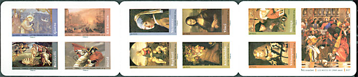
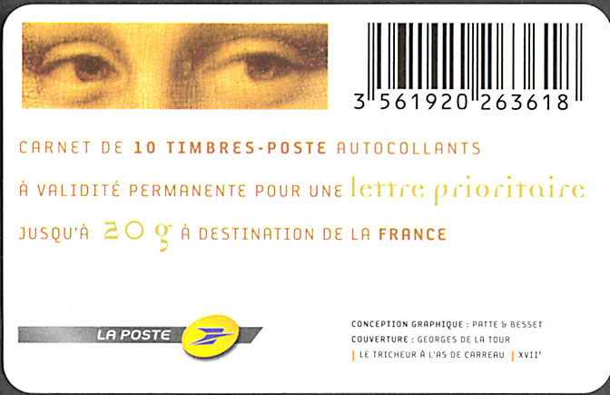
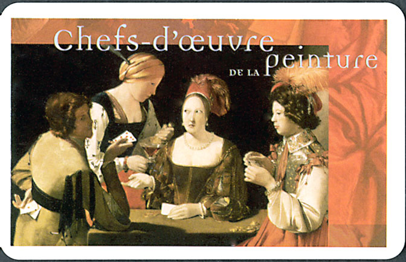
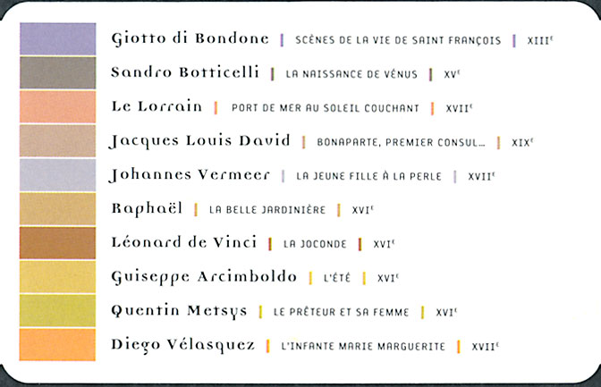
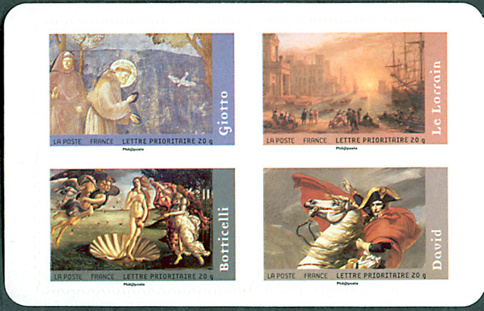
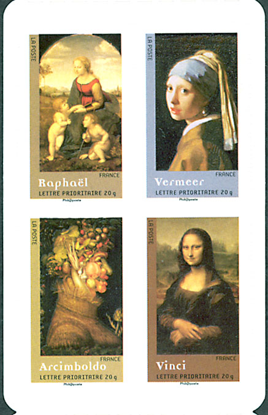
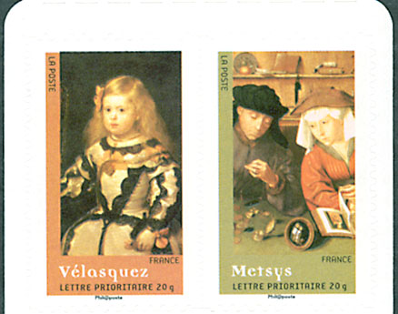
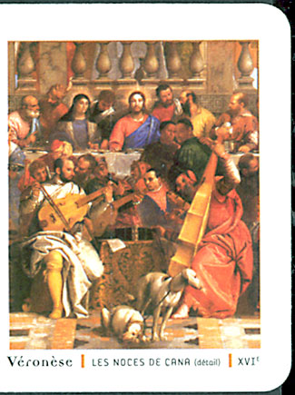
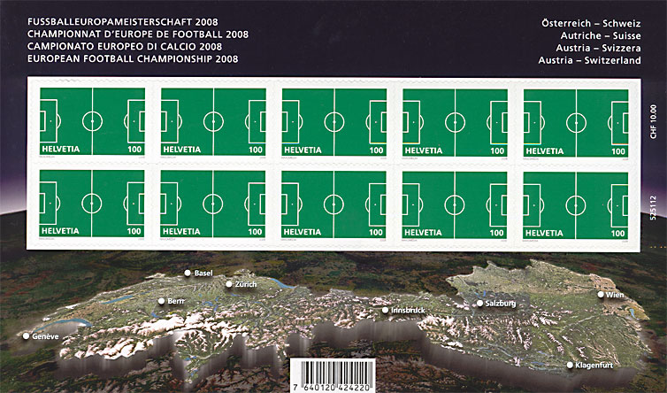

Painting Masterpieces Booklet
On 28th January 2008 the French postal administration issued a booklet of ten self-adhesive stamps, named "Chefs-d'oevre de la peinture", that presents ten masterpieces of great painters who were active from the XIII to the XIX century. The stamps are described on the booklet itself (see below) as "à validité permanente", which obviously means "of a permanent validity".

The booklet says also that they are valid for a letter till 20 grams sent to any destination in France. Being of a permanent validity, no face value is shown on these stamps, just the indication "Lettre prioritaire 20g".

The French post calls this stamps also "semi-permanent", which means "half-permanent". Thanks to an earlier posting in the newsgroup news:fr.rec.philatelie (frp) I have learned that this means that they are a kind of half-definitive. It's an indication that they aren't produced in large quantities like the real definitives but still in quantities that exceed the usual definitive issues.

The front page of the booklet displays the renown painting of the French artist Georges de la Tour, 17th century, "Le tricheur à l'as de carreaux". It is a nice reproduction but it is not a stamp.

On another page of the booklet are listed all ten stamps that are available on the booklet. The painters' names speak for themselves...

Even if the printing quality cannot be compared with that of the grand format issues of the "Artistic Series" of the French set, it seems sufficient for an usage on large scale and a good propaganda for the stamp collecting.

The "Phil@poste" logo on the bottom of each stamp is another indication of the philatelic purposes of this remarkable issue.


Another nice "gift" is a reproduction of the masterpiece of Veronese painting (detail) "Les noces de Cana". This isn't a stamp either, like the de la Tour work mentioned above.

Following the example of my earlier page, dedicated to the French Post Impressionists booklet of 2006, I can't resist the temptation to compare the French 2008 booklet with a sheet of 10 self-adhesive stamps, recently issued by the Swiss Post, and dedicated to the European Football Championship 2008. This big event will take place in Switzerland and Austria in June 2008. Even if the whole looks rather nice, each individual stamp is of no interest, once removed from the sheet. Not the same for the French booklet stamps shown above, isn't it?